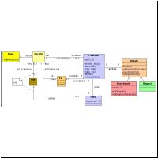
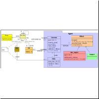
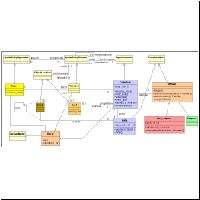
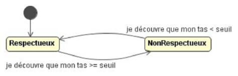
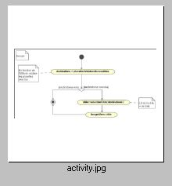

|
DricolÉmergence de conventions sur les ressources communesBruno Locatelli, Cirad ; Olivier Thébaud, Ifremer. 
Dans un article intitulé "Spontaneous order", Sugden (1989) analyse comment des règles collectives d’accès à une ressource naturelle peuvent évoluer et se maintenir sans effort collectif explicite ou sans intervention extérieure. D’après Sugden, le problème des règles d’accès se rapproche d'un jeu de coordination. Comme dans le cas de la théorie des jeux, il est difficile de prévoir l'évolution du système car le comportement des agents n'est pas seulement guidé par la rationalité économique. Comme exemple, il cite le cas de conventions de partage de ressources sur une côte du Yorkshire en Angleterre. Sur cette côte, les habitants collectent le bois apporté par les marées. Une des conventions de collecte a retenu notre attention : lorsqu'une personne ramasse du bois, elle constitue un tas dont elle marque la propriété par un pierre. Cette convention peut être examinée d'un point de vue économique : comme elle permet d'éviter une perte de temps a surveiller le bois, elle augmente l'efficacité de la collecte par rapport a une situation de libre accès. La question est de savoir comment cette convention est apparue. Sugden s'intéresse a son apparition sans faire appel a l’hypothèse d'un agent extérieur, capable d'imposer une règle. Les questions induites sont les suivantes : comment une convention change-t-elle ? (c'est a dire : comment une majorité de gens se met-elle a suivre une nouvelle règle ?) Quels sont les processus qui permettent à la règle de s'auto-renforcer et qui conduisent a son adoption collective ? Sugden étudie différents éléments qui peuvent aider à répondre à ces questions. A partir de cet article, nous avons développé un modèle multi-agents, à l'aide de la plate-forme Cormas. La grille spatiale représente une plage où sont situés des morceaux de bois. Des agents observent leur environnement, se déplacent, collectent le bois et le rassemblent en tas. Dans un premier modèle simple, il n'y a pas de règles de respect des tas de bois. Les agents parcourent la grille, ramassent du bois sur la plage et constituent des tas que les autres viennent piller. Le modèle peut être utilisé pour analyser l'émergence dune règle collective. Deux hypothèses ont conduit a des simulations. La première est appelée la "pression des pairs". Lorsqu'un agent a dépassé un seuil de bois entassé, il devient respectueux de la propriété. Il va non seulement respecter les tas des autres agents mais aussi imposer ce respect : si un agent se trouve dans son rayon de visibilité, il l’empêche de piller les tas. Si le tas d'un agent respectueux est pillé et passe en dessous du seuil, il redeviendra irrespectueux. Dans ce cas, un équilibre est trouvé lorsque tous les agents sont respectueux de la propriété. Le délai dépend évidemment du seuil, de la quantité de bois et du nombre d'agents. L'autre hypothèse est limitation. Au début de la simulation, les individus sont aléatoirement respectueux ou non de la propriété. Si un individu respectueux de la propriété se trouve entouré dune majorité de non-respectueux (dans son rayon de visibilité), il va changer son comportement, et vice-versa. Dans ce cas, on note une grande instabilité du nombre d'agents respectueux. Ce chiffre oscille largement pendant toute la simulation jusqu'à ce que l'un des deux comportements l'emporte. La disposition initiale des tas a une grande influence : si les tas sont rapprochés, les agents seront plus souvent proches les uns des autres et les changements de comportements seront plus fréquents. Ce travail a permis de mettre en évidence l’intérêt des SMA pour traiter des problèmes d'émergence de conventions, qui sont difficilement abordables avec des modélisations économiques classiques. En particulier, les SMA permettent de faire interagir des agents hétérogènes et d'observer l'évolution individuelle ou collective. Représentation UMLCe modèle a été repris et designé en UML lors dune session de formation. Voici les résultats: Diagramme de classe (phase d'analyse), cliquer
pour agrandir 
Diagramme de classe (phase de design), cliquer
pour agrandir 
Diagramme de classe (phase
d'implémentation pour Cormas), cliquer pour
agrandir  Diagramme d'état transition des changement d'attitude :  Diagramme d'activité pour l'activité
"bouger" : 
RéférenceSugden, R. (1989). Spontaneous order. Journal of economic perspectives, 3 (4): 85-97. Lisez l'article complet sur JASSS.
Vous pouvez télécharger le modèle (zip, 4 ko). Pour en savoir plus, contactez Bruno Locatelli ou Olivier Thébaud (or P. Bommel or C. Le Page). |
|